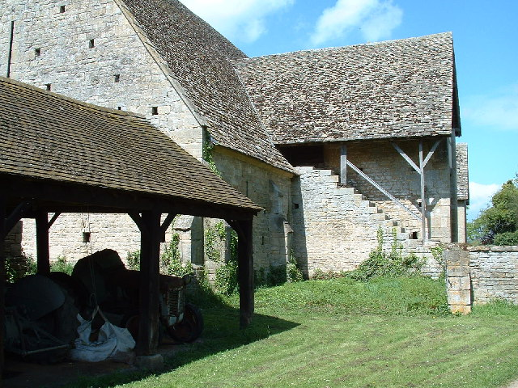

Where it is
Bredon Barn is in Bredon, near Tewkesbury, in Worcestershire, which makes it a strong destination for local visitors and day-trippers.
Discover Bredon Barn
A medieval landmark near TewkesburyVisit
This page combines practical details with short visitor notes. Live information can change, so the official National Trust page should always be checked before travel.
Bredon Barn is in Bredon, near Tewkesbury, in Worcestershire, which makes it a strong destination for local visitors and day-trippers.
The National Trust describes it as a large medieval threshing barn, notable for its aisled interior and unusual chimney detail.
The experience is quieter and simpler than a large visitor attraction, which suits people looking for a short heritage stop with strong character.
Visitor information
| Topic | Information |
|---|---|
| Site type | Large medieval threshing barn |
| Location | Bredon, near Tewkesbury, Worcestershire, GL20 7EG |
| Opening | The official page listed the barn as open from dawn to dusk at the time of research. |
| Parking | No parking available according to the official access notes. |
| Arrival | Access is described as being by foot or bicycle. |
| Surface | Level access via grass, with an uneven concrete floor inside. |
| Lighting | No lighting is listed in the access notes. |
| Assistance dogs | Assistance dogs are welcome. |
The official National Trust page links to map directions and public transport guidance. This page presents stable practical information and points visitors to the official page for live travel or opening updates.
That approach keeps the content useful and trustworthy without pretending to replace official visitor guidance.

Visit tips
Opening arrangements and local access information can change, so check the official page before you travel.
As with many rural heritage places, weather and ground conditions can shape the experience.
The size of the roof and interior structure is one of the most memorable parts of the visit.
Use the contact page for enquiry notes and visitor contact details.
Go to Contact